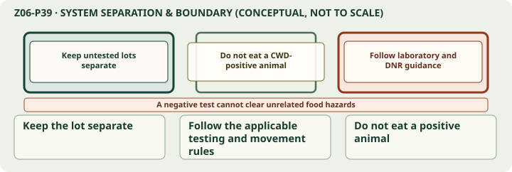

Z06-P39 · Hunting and fishing · New manuscript
Chronic Wasting Disease (CWD) Surveillance and Prion Precautions
Follow Minnesota DNR CWD testing, carcass-movement laws, and CDC prion hygiene whenever harvesting deer in or near CWD areas.
When it applies · Minnesota CWD management, control, and surveillance permit areas.
Equipment · Current MN DNR CWD zone map, nitrile gloves, dedicated boning knife, DNR sampling drop-off info.

Actions
- Check current Minnesota DNR CWD permit-area maps before hunting because mandatory sampling, whole-carcass movement bans, and approved dumpster disposal rules carry legal penalties.[H08]
- Follow CDC precautions: wear gloves, bone out meat without sawing through skull, brain, or spinal cord, avoid eyes/spleen/lymph nodes, and never eat meat from an animal that tests positive or looks sick.[H08, H09]
- Hold all venison from CWD-affected areas separately labeled in cold storage until negative laboratory CWD test results return, recognizing that cooking does NOT destroy prions.[H08, H09]
Failure recognition · Sawing through the spine, moving whole carcasses out of a CWD restriction zone, or assuming cooking kills prions spreads CWD and risks exposure.[H08, H09]
Verify · CWD zone rules, clean boning away from CNS tissue, sampling submission, and negative test verification precede consumption.[H08, H09]
Stop or change course · Stop and do not consume or share venison from any visibly emaciated/abnormal deer or any animal testing CWD-positive.[H08, H09]
Evidence and editorial notes
- H08 · Minnesota DNR · Chronic Wasting Disease (CWD) in Minnesota Deer (Current web edition)
- Section: Chronic Wasting Disease surveillance zones and carcass rules · Conditions: Harvesting cervids in Minnesota CWD management/control zones
Support: DNR designates CWD zones with mandatory sampling, carcass movement restrictions, and proper disposal rules.
Limitations: Infected deer can appear completely healthy; check current zone maps and test before consuming venison from affected areas. · Conflicting evidence: None noted.
Editorial note: Core Z06 CWD regulation and safety rule. · Specialist reviewer: Wildlife veterinarian and DNR reviewer
Primary source · checked 2026-11-25 - H09 · CDC · About Chronic Wasting Disease (CWD) Hunter Precautions (2024)
- Section: CDC CWD precautions for hunters and field dressing · Conditions: Field dressing and consuming venison from CWD-affected areas
Support: CDC advises wearing latex or rubber gloves, minimizing handling of brain and spinal tissues, testing harvested deer from CWD areas, and not eating meat from CWD-positive animals.
Limitations: Standard cooking temperatures do not destroy prions; avoid sawing through bone or spinal cord. · Conflicting evidence: None noted.
Editorial note: Reinforces Z06 prion hygiene boundary. · Specialist reviewer: Infectious-disease and wildlife veterinarian
Primary source · checked 2026-11-25
Source lineage · New manuscript (Z06 P17 CWD safety) · Classification · New manuscript.